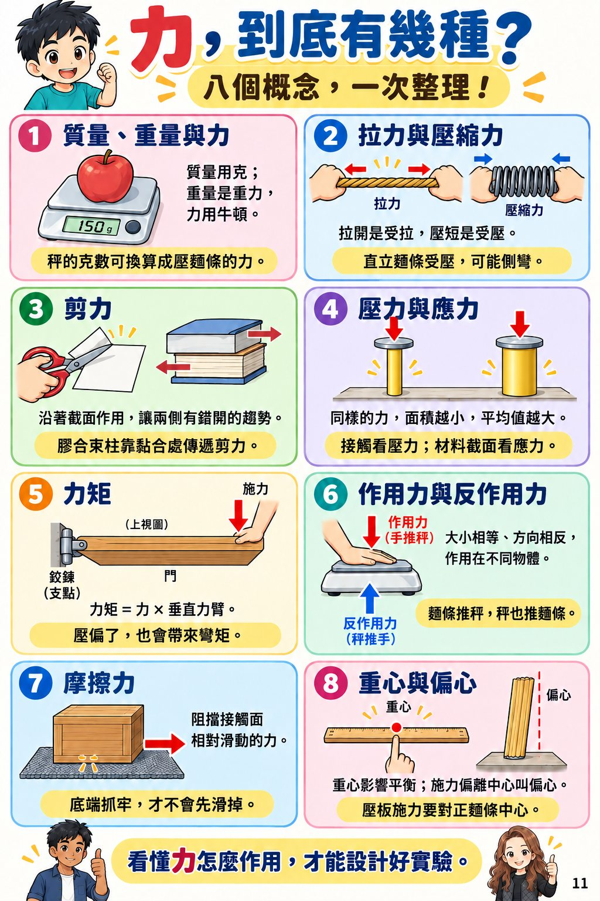
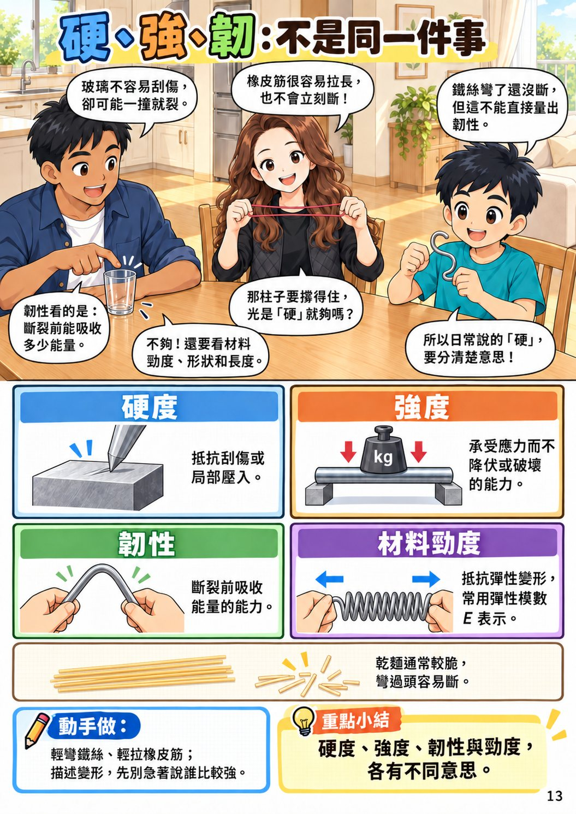
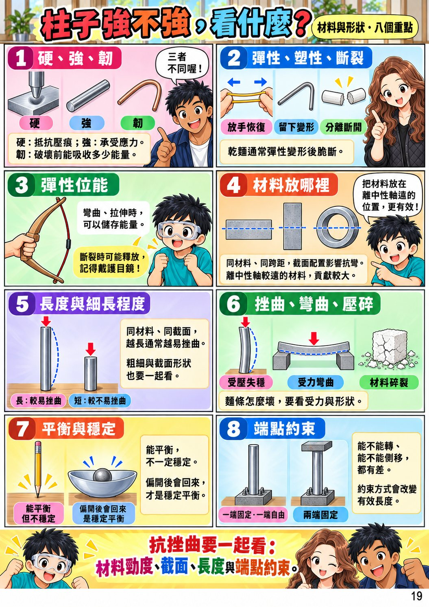
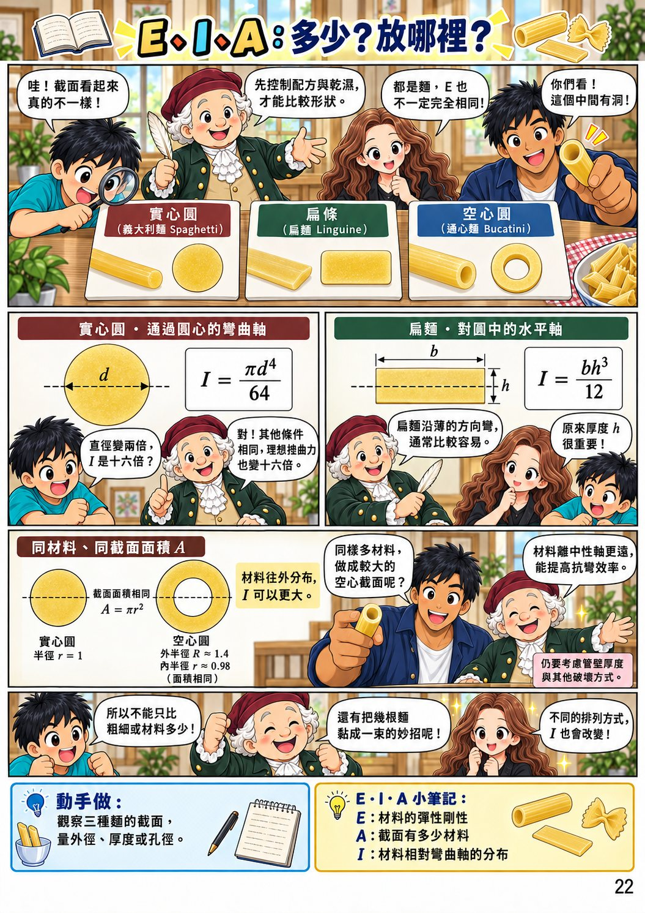
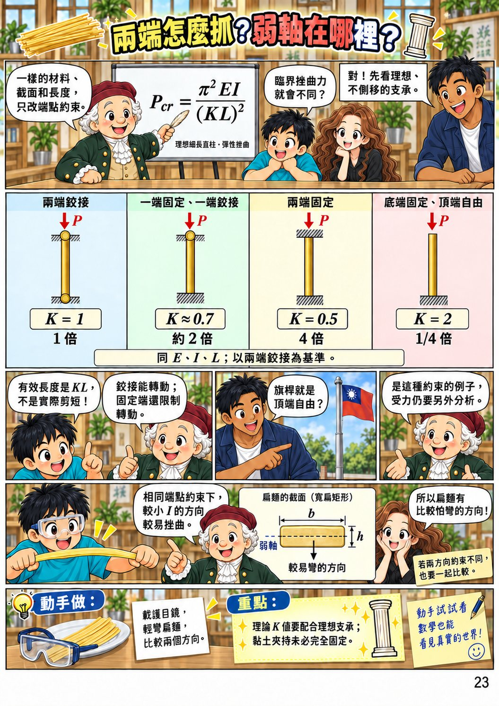
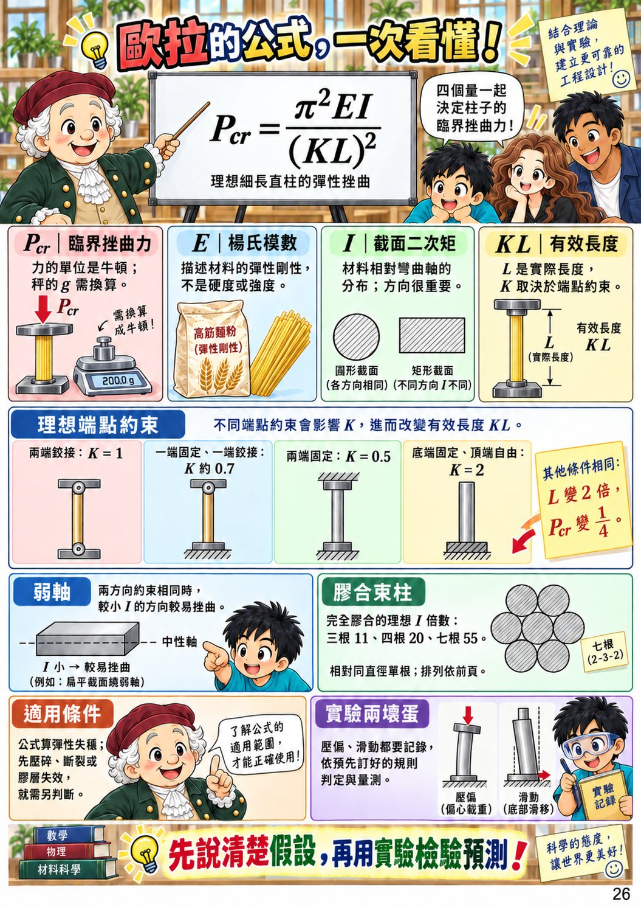
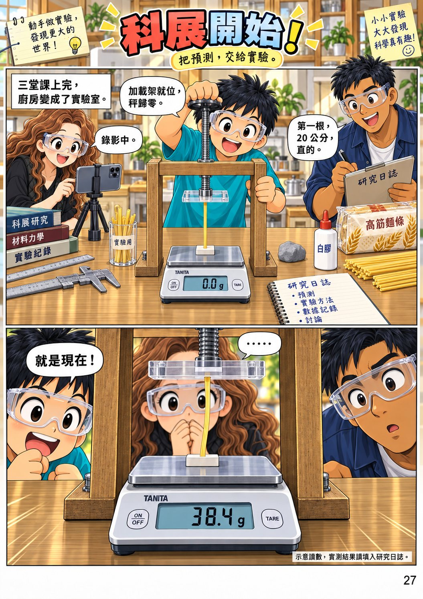
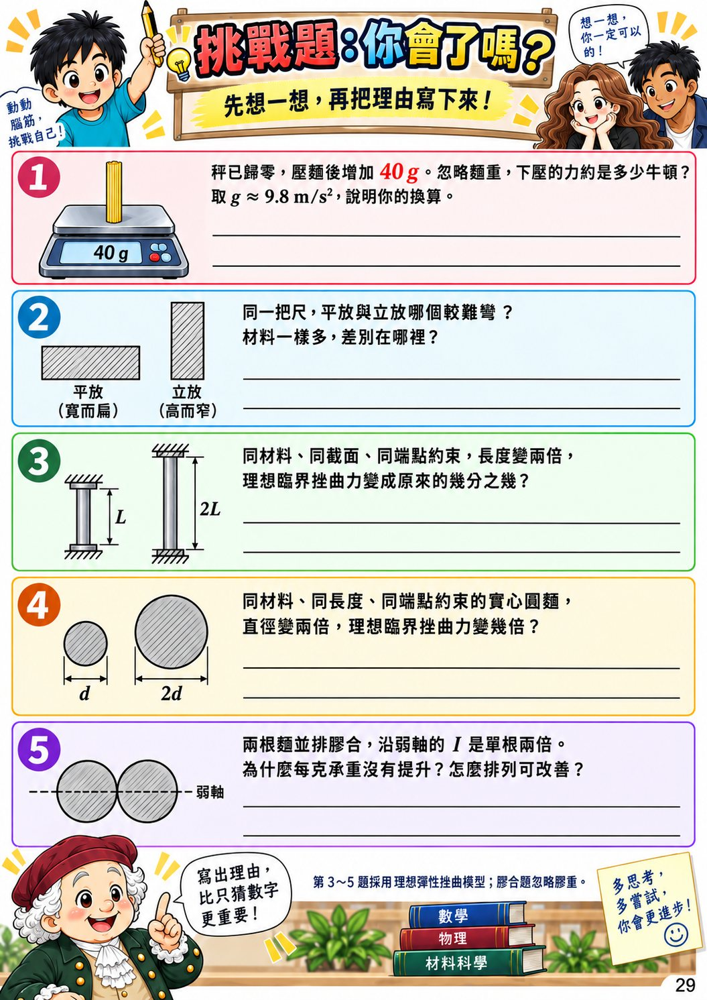

一根麵，能撐多重？
序章 · 1
序章 · 2
第1章 力 · 3
第1章 力 · 4
第1章 力 · 5
第1章 力 · 6
第1章 力 · 7
第1章 力 · 8
第1章 力 · 9
第1章 力 · 10

第1章 力 · 11
第2章 材料與形狀 · 12

第2章 材料與形狀 · 13
第2章 材料與形狀 · 14
第2章 材料與形狀 · 15
第2章 材料與形狀 · 16
第2章 材料與形狀 · 17
第2章 材料與形狀 · 18

第2章 材料與形狀 · 19
第3章 歐拉的公式 · 20
第3章 歐拉的公式 · 21

第3章 歐拉的公式 · 22

第3章 歐拉的公式 · 23
第3章 歐拉的公式 · 24
第3章 歐拉的公式 · 25

第3章 歐拉的公式 · 26

實驗與挑戰 · 27
實驗與挑戰 · 28

實驗與挑戰 · 29
實驗與挑戰 · 30
↑
← 左右滑動翻頁 →